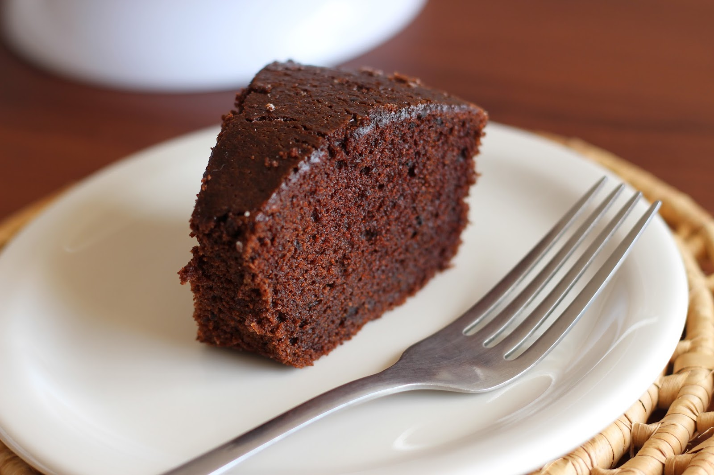

RECEITAS DO CHELÃO
o brabo de BH
BOLO DE CHOCOLATE

Ingredientes:
- 2 xícaras de açúcar
- 1 e 3/4 xícaras de farinha de trigo
- 3/4 xícara de cacau em pó
- 1 colher de sopa de fermento em pó
- 1 colher de chá de sal
- 2 ovos
- 1 xícara de leite
- 1/2 xícara de óleo
- 2 colheres de chá de essência de baunilha
- 1 xícara de água quente
Modo de preparo:
- Preaqueça o forno a 180°C e unte uma forma.
- Misture o açúcar, a farinha de trigo, o cacau em pó, o fermento em pó e o sal em uma tigela.
- Adicione os ovos, o leite, o óleo e a essência de baunilha e misture bem.
- Adicione a água quente e misture novamente.
- Despeje a massa na forma e asse por cerca de 35 minutos.
.
michelmaike©®